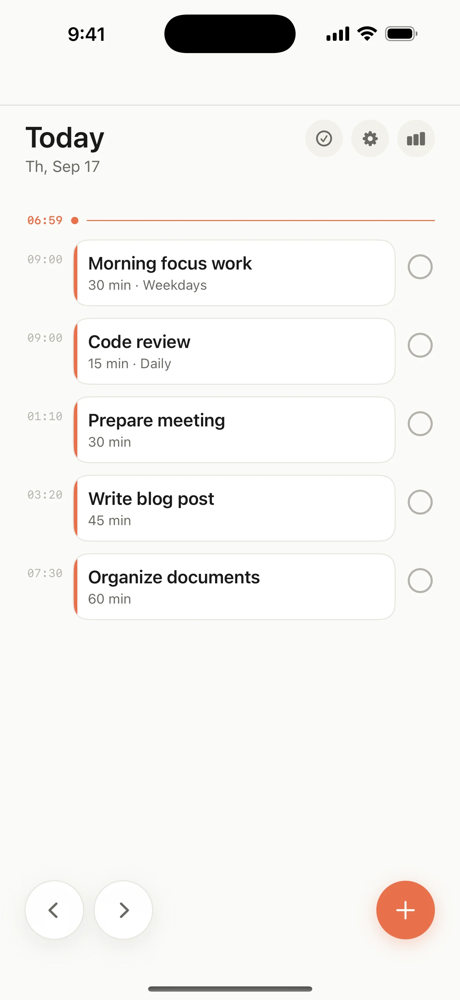
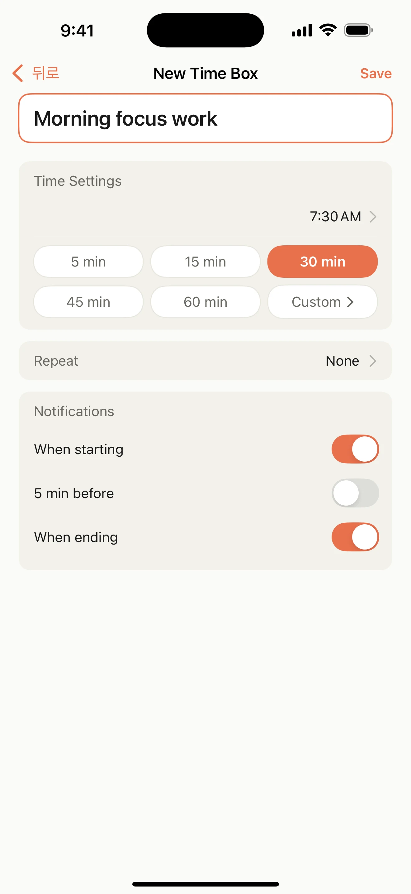
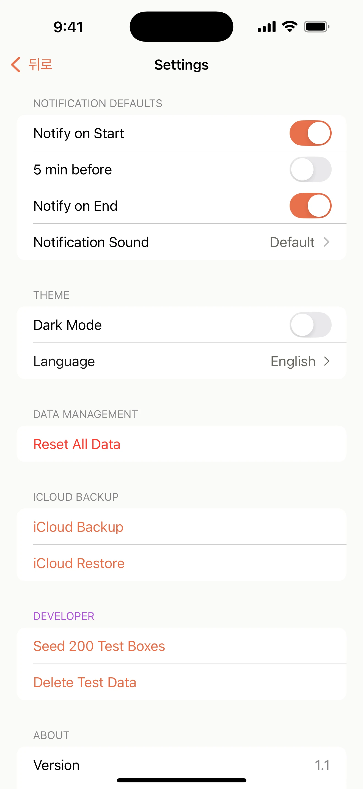
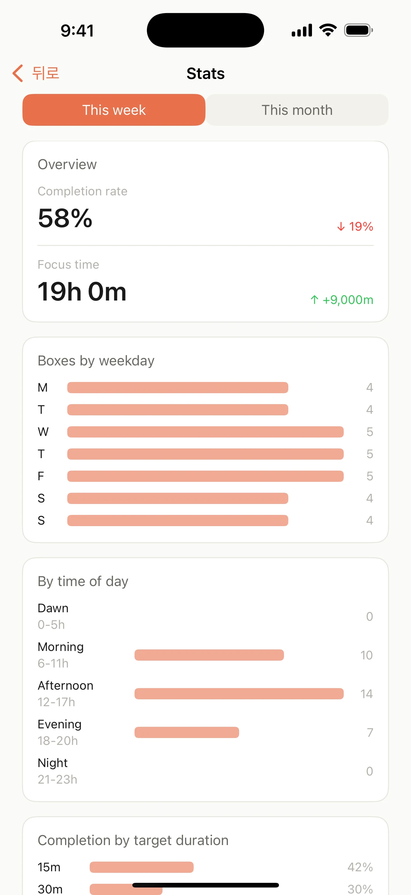

01
See today clearly
Keep today’s time boxes in order and focus on what comes next.
Zero-friction timeboxing
Write what matters, choose when, and let Boxday remind you. No complicated planning system required.

One line, then go
Plan only what you need, then let Boxday keep the moment to begin within reach.
Keep today’s time boxes in order and focus on what comes next.
Add a title, start time, and duration. That is all it takes.

Choose start, five-minute, and end reminders that fit your day.

Look back at this week’s focus and completion patterns at a glance.

Designed for trust